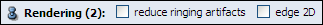

Ports

Illumination activate portIllumination.
Aligned slices indicates if slices must be drawn in a view-aligned manner. This value is used for 3D texturing only. Default is true.
Color table enables a transfer function lookup. When this option is activated, only a quarter of the texture memory is needed for RGBA rendering and the color table and its range can be modified in real-time. Note that due to incomplete OpenGL implementations, some graphics boards which claim to support color tables do not. If you see artifacts or only plain white cubes, disable this option. Default is true.
Hi-quality decrease slicing effect by preintegrated rendering.
Reduce ringing artifacts decrease ringing artifacts by adding some jittering.
Edge 2D enables 2D edges detection.
Specifies color composition type. Alpha composes the slices by blending the R, G, B components for each pixel based on their alpha values. Sum adds slice colors along the viewing axis. (Not available on VolumePro hardware.) Max draws the maximum intensity for each pixel drawn along the viewing axis. Min draws the minimum intensity for each pixel drawn along the viewing axis.
This port is only available if the module operates on a 3D scalar field and no colormap is connected. In this case data values are mapped according to this range. Values smaller than the minimum are mapped to completely transparent (no absorption and no emission). Values larger than the maximum appear completely opaque and emit the maximum amount of light. Values in between are mapped proportionally.
Only available if a colormap is connected. In Alpha mode, the colormap's alpha value is used for both absorption and emission. In LumAlpha mode, the colormap's alpha value is used for absorption, while the luminance is taken for (uncolored) emission. In RGBA mode, colored images are generated by using all four channels of the colormap.

Lighting indicates if lighting is required. Default is false. Note that activating or deactivating lighting when using 2D/3D texture rendering might force the textures to be recreated, which may be slow. limitations: Underlying VolumeViz rendering engine does handle only a single light. So only the first light (ie. the headlight if enabled or the first created light if not) will be used. More over only directional lights are supported.
Edge enhancement fakes lighting by detecting edge.
Boudary opacity fakes lighting by darkening volume boundaries.
Apply an image space filter to the renderer volume in order to detect edges, which will be highlighted.